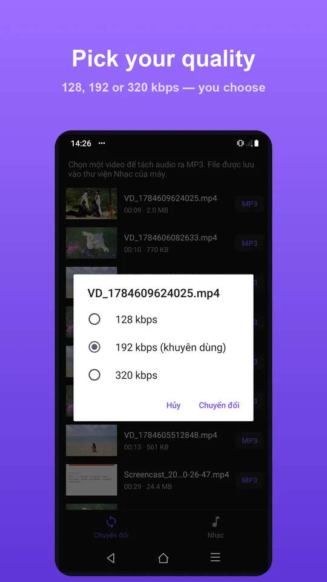
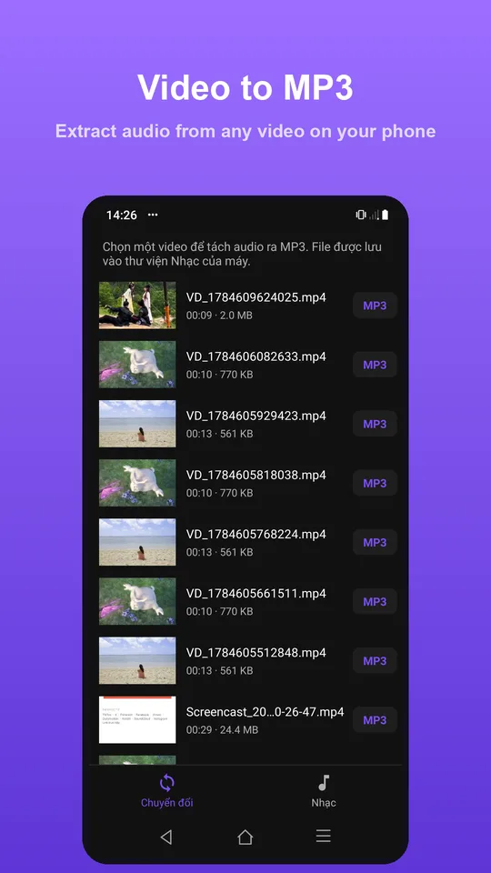

Đổi MP4 sang MP3: nên chọn 128, 192 hay 320 kbps?
Khi bạn tách nhạc từ một video, ứng dụng hỏi đúng một câu trước khi bắt đầu: chất lượng bao nhiêu? Ba con số hiện ra — 128, 192 và 320 kbps — và phản xạ tự nhiên là chọn số lớn nhất. Đôi khi đó là lựa chọn đúng, nhưng thường thì không. Bài này giải thích mỗi con số nghĩa là gì và khi nào bạn thật sự nghe được sự khác biệt.
1. Bitrate là gì
Bitrate là lượng dữ liệu mà file dùng cho mỗi giây âm thanh, tính bằng kilobit trên giây (kbps). Con số càng lớn thì bộ mã hoá càng giữ lại được nhiều chi tiết của bản gốc — và file càng nặng.
MP3 là định dạng nén có mất dữ liệu: nó loại bỏ những phần âm thanh mà tai người khó nhận ra, rồi mô tả phần còn lại gọn nhất có thể. Bitrate quyết định bộ mã hoá được phép rộng rãi tới đâu. Ở 320 kbps nó giữ gần như mọi thứ; ở 128 kbps nó phải cắt bỏ nhiều hơn, và những thứ bị cắt đầu tiên thường là các tần số cao — tiếng cymbal, tiếng gió, đuôi vang của một nốt đàn.
2. Ba mức, ba mục đích

128 kbps dành cho lời nói: podcast, bài giảng, phỏng vấn, hướng dẫn. Giọng người chiếm một dải tần hẹp, nên 128 kbps đã thừa sức tái tạo rõ ràng. Một giờ ghi âm chỉ chiếm khoảng 55 MB.
192 kbps là mức cân bằng và cũng là lựa chọn hợp lý cho phần lớn trường hợp. Với nhạc nghe trên tai nghe thường hay loa Bluetooth, rất khó phân biệt nó với bản 320 kbps, trong khi file nhẹ hơn khoảng 40%.
320 kbps là mức cao nhất mà MP3 cho phép. Chọn nó khi bạn nghe bằng tai nghe tốt, khi bản gốc là video nhạc chất lượng cao, hoặc khi bạn định giữ file này lâu dài và không muốn tiếc về sau.
3. Tai người nghe được khác biệt tới đâu
Điều này phụ thuộc vào ba thứ, theo đúng thứ tự quan trọng: thiết bị nghe, loại nội dung, và môi trường xung quanh.
| Loa điện thoại | Gần như không phân biệt được 128 và 320 |
|---|---|
| Tai nghe Bluetooth thường | 128 hơi mỏng ở dải cao; 192 và 320 rất giống nhau |
| Tai nghe có dây tốt, phòng yên tĩnh | Khác biệt nghe được rõ nhất ở cymbal và đuôi vang |
| Nghe trên xe, ngoài đường | Tiếng ồn nền che mất phần lớn khác biệt |
Nói cách khác: nếu bạn nghe nhạc lúc đi đường bằng tai nghe Bluetooth, 192 kbps là điểm dừng hợp lý. Nếu bạn ngồi yên với một cặp tai nghe tử tế, hãy chọn 320.
4. Chất lượng không vượt được bản gốc

Đây là điểm hay bị hiểu nhầm nhất. Chọn 320 kbps không làm âm thanh tốt hơn bản gốc — nó chỉ đảm bảo quá trình chuyển đổi không làm mất thêm gì.
Nếu video bạn tách ra vốn có phần tiếng ở mức 96 kbps — chuyện rất bình thường với video quay bằng điện thoại hay tải về từ mạng — thì xuất ra 320 kbps chỉ tạo ra một file to hơn chứa đúng lượng thông tin cũ.
Vì vậy quy tắc thực dụng là: 192 kbps cho gần như mọi thứ, 320 kbps khi bạn biết chắc bản gốc xứng đáng, 128 kbps khi nội dung chỉ là giọng nói.
5. Dung lượng thay đổi thế nào
Một cách nhẩm nhanh: mỗi phút âm thanh chiếm khoảng bằng bitrate chia cho 133, tính theo megabyte.
| 128 kbps | ≈ 0,9 MB mỗi phút — 55 MB cho một giờ |
|---|---|
| 192 kbps | ≈ 1,4 MB mỗi phút — 82 MB cho một giờ |
| 320 kbps | ≈ 2,4 MB mỗi phút — 137 MB cho một giờ |
Với một bài hát bốn phút, khác biệt giữa 192 và 320 chỉ khoảng 4 MB — không đáng để cân nhắc. Với một bộ podcast bốn mươi tập, mỗi tập một tiếng, khác biệt là hơn 3 GB.
Chọn nhanh: lời nói → 128. Không chắc → 192. Nhạc chất lượng cao mà bạn sẽ nghe bằng tai nghe tốt → 320.
Tách nhạc từ video trong 4 bước
- Mở ứng dụng và chọn video từ thư viện trên máy.
- Chọn mức chất lượng: 128, 192 hoặc 320 kbps.
- Chờ vài giây — quá trình chạy trên máy, không cần mạng.
- Phát thử, chia sẻ hoặc đặt làm nhạc chuông ngay trên màn hình kết quả.

Video gốc không bị thay đổi hay xoá đi — file MP3 được ghi ra bên cạnh. Nếu chọn nhầm mức chất lượng, bạn chỉ cần chạy lại với mức khác.
Toàn bộ xử lý diễn ra trên thiết bị. Video của bạn không được tải lên đâu cả, không cần kết nối mạng, và file xuất ra không có watermark.
Câu hỏi thường gặp
Nên chọn mức nào nếu tôi không chắc?
192 kbps. Đây là điểm cân bằng giữa chất lượng và dung lượng, và với hầu hết thiết bị nghe thông thường bạn sẽ không phân biệt được nó với 320 kbps.
Chọn 320 kbps có làm âm thanh hay hơn bản gốc không?
Không. Bitrate cao chỉ đảm bảo quá trình chuyển đổi không làm mất thêm chi tiết; nó không thể khôi phục thứ vốn không có trong video gốc.
File MP3 sẽ nặng bao nhiêu?
Khoảng 0,9 MB mỗi phút ở 128 kbps, 1,4 MB ở 192 kbps và 2,4 MB ở 320 kbps. Một bài hát bốn phút ở 320 kbps chiếm chừng 9–10 MB.
Video gốc có bị xoá sau khi tách không?
Không. File MP3 được tạo ra bên cạnh, video ban đầu vẫn nằm nguyên trong thư viện của bạn.
Có cần kết nối mạng không?
Không. Toàn bộ quá trình chuyển đổi chạy trên thiết bị, kể cả khi ở chế độ máy bay.
Lỡ chọn sai mức chất lượng thì sao?
Chỉ cần chạy lại từ video gốc với mức khác. Vì bản gốc không bị đụng tới, bạn có thể tạo lại bao nhiêu lần tuỳ ý.
Tách thử một video
Chuyển video sang MP3 ngay trên máy, không cần mạng, không watermark.
Tải trên Google Play Tính năng